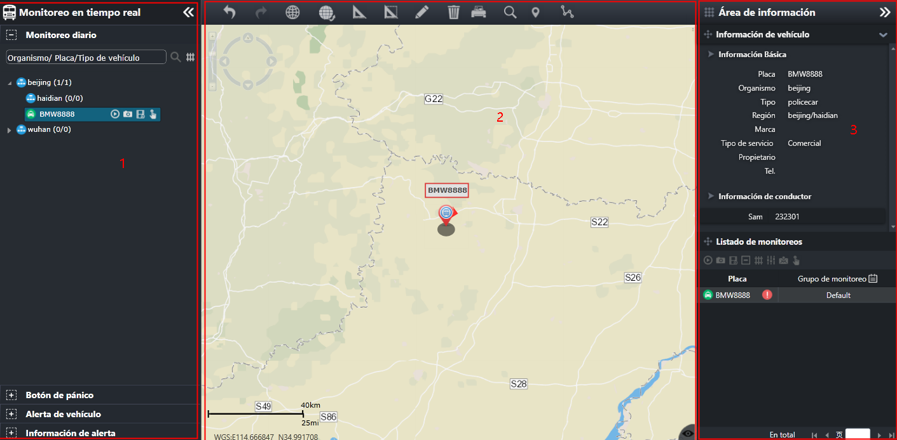

El monitoreo diario proporciona a los usuarios monitoreo de ubicación, monitoreo de video, estadísticas de vehículo en línea,
consulta de información del vehículo, seguimiento del vehículo, consulta de trayectoria histórica, alarma manual y otras funciones
de los vehículos operativos en situaciones diarias. El usuario puede monitorear todos los vehículos operativos de acuerdo
con la organización del vehículo, y también puede monitorear los vehículos en grupo que son de interés.
En la barra de menú de navegación izquierda, seleccione el menú principal para entrar a la interfaz principal de monitoreo diario.

Fig 20 Interfaz principal de monitoreo diario
La interfaz principal de monitoreo diario es como se muestra en la figura arriba:
|
• |
Área 1: la barra de menú de navegación proporciona cuatro elementos de menú: monitoreo diario, alarma del vehículo, alerta
del vehículo y alarma del dispositivo. Haga clic en el icono 〖〗 en la esquina superior derecha para plegar el área a la izquierda, y la barra del menú de navegación está oculta. El área
del mapa GIS de área 3 se hace más grande; haga clic en el icono 〖〗 en el mapa para expandir la barra de menú de navegación plegada. |
|
• |
Área 2: es el área GIS, que muestra información relacionada con el monitoreo de vehículos en el mapa SIG y proporciona funciones
como acercamiento, trazado y medición de mapas. Para operaciones relacionadas del área SIG, consulte Operaciones de uso en mapa GIS. |
|
• |
Área 3: es el área de información, su parte superior muestra la información relacionada con el vehículo, y su parte inferior
muestra el área de monitoreo del grupo. Haga clic en el icono 〖〗 en la esquina superior derecha del área de información para ocultar la ventana de área de información. Haga clic en 〖〗 para plegar la información relacionada con el vehículo. |